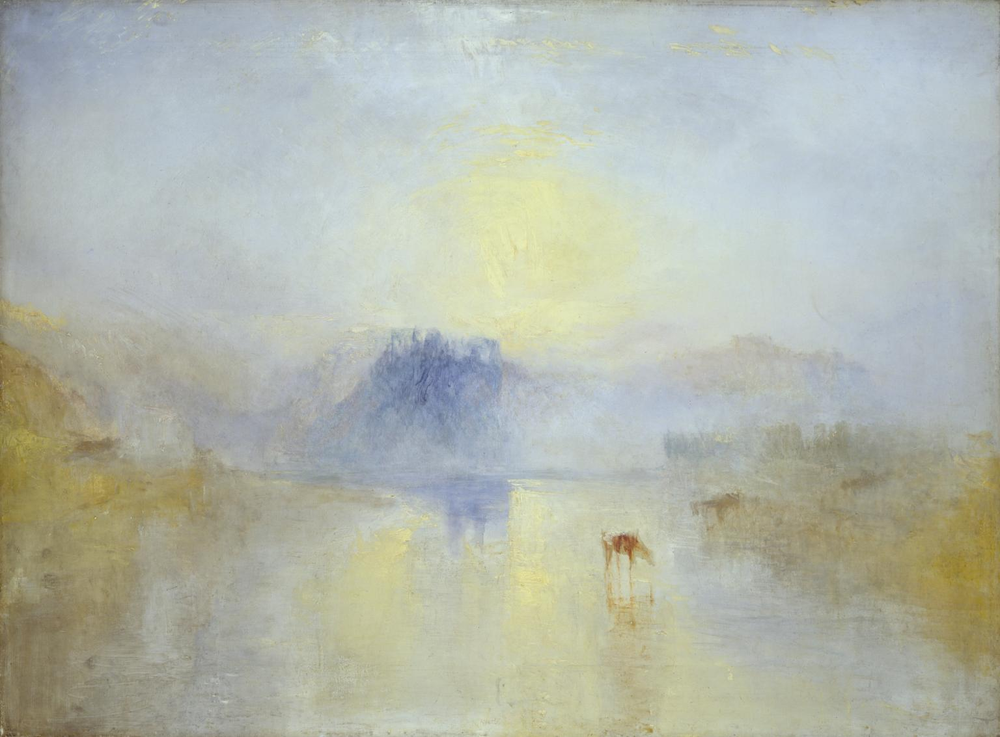
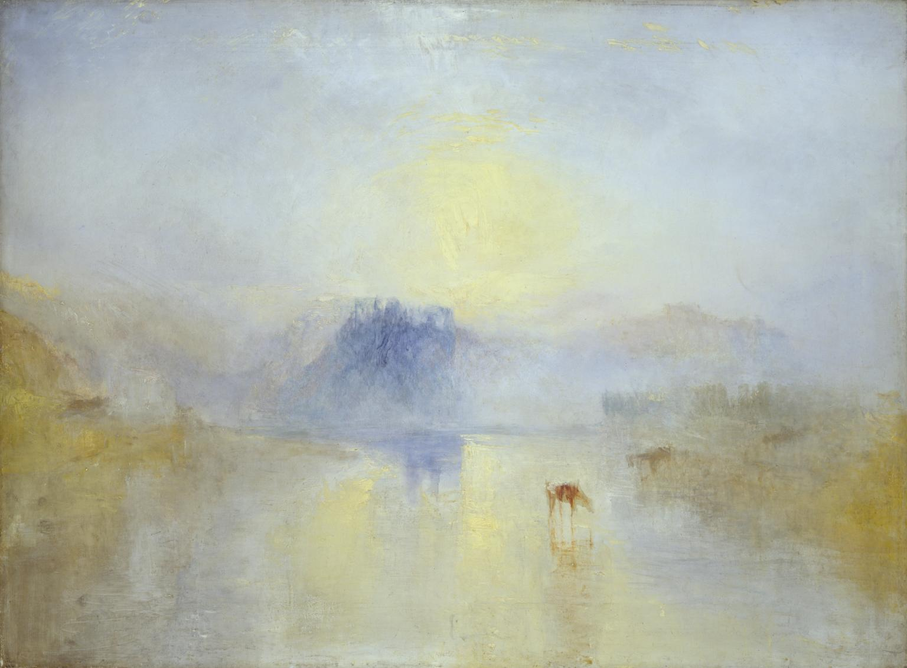

Just another white man
working on, and thinking about, how technology can best serve humanity's interests.
LinkedInI am an AI safety and policy expert with a particular interest in how market forces shape AI production, consumption, fairness, accountability, transparency, and safety. My research has explored the extent to which foundation models are natural monopoly products; fairness, accountability, and transparency practices in the open-source community on Hugging Face; the development of auditing frameworks to guide the evaluation of predictive public sector algorithms’ compliance with human rights law; and the usefulness of the concept of ecosystems for the antitrust evaluation of Big Tech firms.
A graduate of the University of Oxford, where I completed a masters in the Social Science of the Internet at the Oxford Internet Institute, I believe fundamentally in the importance of research-based policy. I also studied Law and History at the University of Cambridge, and my studies there, notably on the social history of the Industrial Revolution, continue to influence my approach to technology policy research and practice.